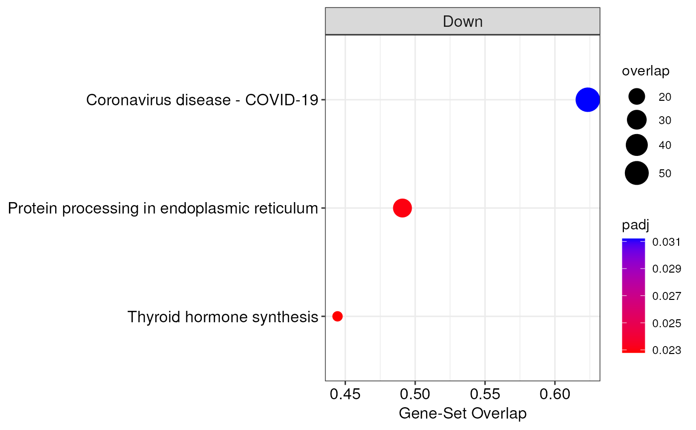

This function allows to investigate the biological functions and pathways that result dysregulated across biological conditions. In particular, different enrichment approaches can be used, including over-representation analysis (ORA), gene-set enrichment analysis (GSEA), and Correlation Adjusted MEan RAnk gene set test (CAMERA). Moreover, for all these analyses, the enrichment can be carried out using different databases, namely Gene Ontology (GO), Kyoto Encyclopedia of Genes and Genomes (KEGG), MsigDB, WikiPathways, Reactome, Enrichr, Disease Ontology (DO), Network of Cancer Genes (NCG), DisGeNET, and COVID19. For exhaustive information on how to use this function, please refer to the details section.
Usage
enrichGenes(
mirnaObj,
method = "GSEA",
database = "GO",
category = NULL,
organism = "Homo sapiens",
pCutoff = 0.05,
pAdjustment = "fdr",
minSize = 10L,
maxSize = 500L,
rankMetric = "signed.pval",
eps = 1e-50
)Arguments
- mirnaObj
A
MirnaExperimentobject containing miRNA and gene data- method
The functional enrichment analysis to perform. It must be one of
ORA,GSEA(default), andCAMERA. For additional information, see the details section- database
The name of the database used for the enrichment analysis. It must be one of:
GO,KEGG,MsigDB,WikiPathways,Reactome,Enrichr,DO,NCG,DisGeNET,COVID19. Default isGO- category
The desired subcategory of gene sets present in
database. Please, see the details section to check the available categories for each database. Default is NULL to use default categories- organism
The name of the organism under consideration. The different databases have different supported organisms. To see the list of supported organisms for a given database, use the
supportedOrganisms()function. Default isHomo sapiens- pCutoff
The adjusted p-value cutoff to use for statistical significance. The default value is
0.05- pAdjustment
The p-value correction method for multiple testing. It must be one of:
fdr(default),BH,none,holm,hochberg,hommel,bonferroni,BY- minSize
The minimum size for a gene set. All gene sets containing less than this number of genes will not be considered. Default is 10
- maxSize
The maximum size for a gene set. All gene sets containing more than this number of genes will not be considered. Default is 500
- rankMetric
The ranking statistic used to order genes before performing GSEA. It must be one of
signed.pval(default),logFC, andlog.pval. For additional information, refer to the details section- eps
The lower boundary for p-value calculation (default is 1e-50). To compute exact p-values, this parameter can be set to 0, even though the analysis will be slower
Value
For method GSEA and CAMERA, this function produces an object of class
FunctionalEnrichment containing enrichment
results. Instead, when ORA is used, this function returns a list object
with two elements, namely 'upregulated' and 'downregulated',
each containing a FunctionalEnrichment
object storing enrichment results of upregulated and downregulated genes, respectively.
To access results of FunctionalEnrichment
objects, the user can use the enrichmentResults() function. Additionally,
MIRit provides several functions to graphically represent enrichment
analyses, including enrichmentBarplot(), enrichmentDotplot(),
gseaPlot(), and gseaRidgeplot().
Details
Enrichment method
The method used for functional enrichment analysis will drastically
influence the biological results, and thus, it must be carefully chosen.
ORA (Boyle et al., 2004) takes differentially expressed genes (separately
considering upregulated and downregulated features) and uses the
hypergeometric test to infer the biological processes that are regulated by
these genes more than would be expected by chance. The downside of this
approach is that we only consider genes that passed a pre-defined threshold,
thus losing all the slight changes in gene expression that may have important
biological consequences.
To address this limit, GSEA was introduced (Subramanian, 2005). This
analysis starts by ranking genes according to a specific criterion, and then
uses a running statistic that is able to identify even slight but coordinated
expression changes of genes belonging to a specific pathway. Therefore,
GSEA is the default method used in MIRit to perform the functional
enrichment analysis of genes.
Moreover, in addition to ORA and GSEA, this function allows to perform the
enrichment analysis through CAMERA (Wu and Smyth, 2012), which is another
competitive test used for functional enrichment of genes. The main advantage
of this method is that it adjusts the gene set test statistic according to
inter-gene correlations. This is particularly interesting since it was
demonstrated that inter-gene correlations may affect the reliability of
functional enrichment analyses.
Databases and categories
Regarding gene sets, multiple databases can be used to investigate the
consequences of gene expression alterations. However, different databases
also includes several subcategories with different annotations. To
specifically query desired categories, the category parameter is used. As
a reference, here are listed the available categories for the different
databases supported:
Gene Ontology (GO):
bp, for GO - Biological Processes;mf, for GO - Molecular Function;cc, for GO - Cellular Component;
Kyoto Encyclopedia of Genes and Genomes (KEGG):
pathway, for KEGG biological pathways;module, for KEGG reaction modules;enzyme, for KEGG enzyme nomenclature;disease, for KEGG diseases (only Homo sapiens supported);drug, for KEGG drug targets (only Homo sapiens supported);network, for KEGG disease/drug perturbation netowrks (only Homo sapiens supported);
MsigDB:
H, for MsigDB hallmark genes of specific biological states/processes;C1, for gene sets of human chromosome cytogenetic bands;C2-CGP, for expression signatures of genetic and chemical perturbations;C2-CP-BIOCARTA, for canonical pathways gene sets derived from the BioCarta pathway database;C2-CP-KEGG, for canonical pathways gene sets derived from the KEGG pathway database;C2-CP-PID, for canonical pathways gene sets derived from the PID pathway database;C2-CP-REACTOME, for canonical pathways gene sets derived from the Reactome pathway database;C2-CP-WIKIPATHWAYS, for canonical pathways gene sets derived from the WikiPathways database;C3-MIR-MIRDB, for gene sets containing high-confidence gene-level predictions of human miRNA targets as catalogued by miRDB v6.0 algorithm;C3-MIR-MIR_Legacy, for older gene sets that contain genes sharing putative target sites of human mature miRNA in their 3'-UTRs;C3-TFT-GTRD, for genes that share GTRD predicted transcription factor binding sites in the region -1000,+100 bp around the TSS for the indicated transcription factor;C3-TFT-TFT_Legacy, for older gene sets that share upstream cis-regulatory motifs which can function as potential transcription factor binding sites;C4-CGN, for gene sets defined by expression neighborhoods centered on 380 cancer-associated genes;C4-CM, for cancer modules as defined by Segal et al. 2004;C5-GO-BP, for GO - biological process ontology;C5-GO-CC, for GO - cellular component ontology;C5-GO-MF, for GO - molecular function ontology;C5-HPO, for Human Phenotype ontology (HPO);C6, for gene sets that represent signatures of cellular pathways which are often dis-regulated in cancer;C7-IMMUNESIGDB, for manually curated gene sets representing chemical and genetic perturbations of the immune system;C7-VAX, for gene sets deriving from the Human Immunology Project Consortium (HIPC) describing human transcriptomic immune responses to vaccinations;C8, for gene sets that contain curated cluster markers for cell types;
WikiPathways;
Reactome;
Enrichr:
All avaliable gene sets can be listed through
geneset::enrichr_metadata
Disease Ontology (DO);
Network of Cancer Genes (NCG):
v6, for the sixth version;v7, for the seventh version;
DisGeNET;
COVID-19.
Supported organisms
For each database, different organisms are supported. To check the supported
organisms for a given database, MIRit provides the supportedOrganisms()
function.
GSEA ranking statistic
The ranking statistic used to order genes before conducting GSEA is able
to influence the biological interpretation of functional enrichment
results. Several metrics have been used in scientific literature. MIRit
implements the possibility of using signed.pval, logFC, and log.pval.
In particular, the simplest option is to rank genes according to their
logFC value. However, this procedure is biased by higher variance for
lowly abundant genes.
Therefore, we recommend to use the signed.pval metric, which consists in
the p-value of a gene multiplied for the sign of its logFC, i.e.
sign(logFC) * p-value. Alternatively, log,pval metric, which consist in
the product of logFC and p-value, i.e. logFC * p-value can also be used.
Note
To download gene sets from the above mentioned databases, MIRit uses the
geneset R package. Moreover, to perform ORA and GSEA, MIRit implements the
fgsea algorithm, whereas for CAMERA, the limma package is used.
References
Liu, Y., Li, G. Empowering biologists to decode omics data: the Genekitr R package and web server. BMC Bioinformatics 24, 214 (2023). https://doi.org/10.1186/s12859-023-05342-9.
Korotkevich G, Sukhov V, Sergushichev A (2019). “Fast gene set enrichment analysis.” bioRxiv. doi:10.1101/060012, http://biorxiv.org/content/early/2016/06/20/060012.
Ritchie ME, Phipson B, Wu D, Hu Y, Law CW, Shi W, Smyth GK (2015). “limma powers differential expression analyses for RNA-sequencing and microarray studies.” Nucleic Acids Research, 43(7), e47. doi:10.1093/nar/gkv007.
Wu D, Smyth GK. Camera: a competitive gene set test accounting for inter-gene correlation. Nucleic Acids Res. 2012 Sep 1;40(17):e133. doi: 10.1093/nar/gks461. Epub 2012 May 25. PMID: 22638577; PMCID: PMC3458527.
Author
Jacopo Ronchi, jacopo.ronchi@unimib.it
Examples
# load example MirnaExperiment object
obj <- loadExamples()
# perform GSEA with KEGG
de_enr <- enrichGenes(obj, method = "GSEA", database = "KEGG")
#> Since not specified, 'category' for KEGG database is set to pathway (default).
#> Preparing the appropriate gene set...
#>
#> Some ID occurs one-to-many match, like "79154, 7920, 79143"...
#> 99.96% genes are mapped to symbol
#> Ranking genes based on signed.pval...
#> Performing gene-set enrichment analysis (GSEA)...
#> GSEA reported 4 significantly enriched terms.
# extract results
de_df <- enrichmentResults(de_enr)
# create a dotplot of enriched terms
enrichmentDotplot(de_enr)
